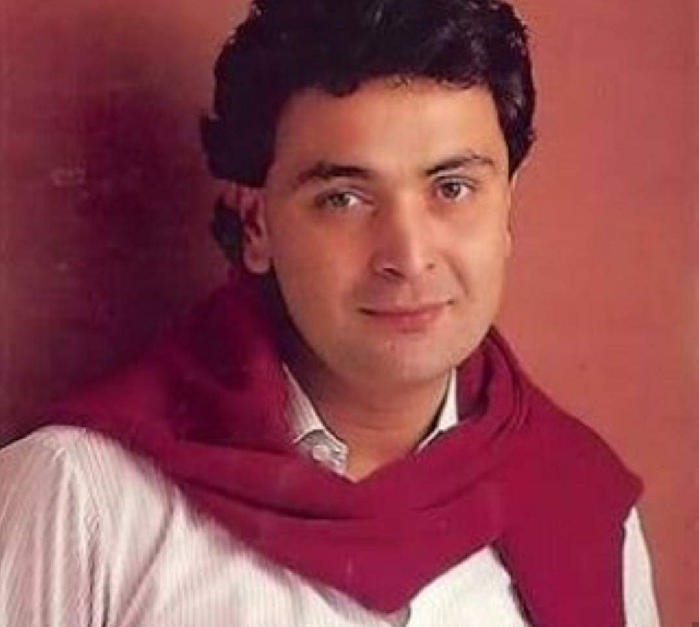
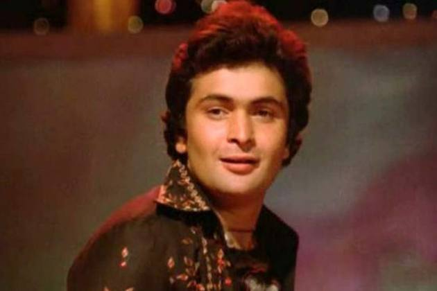
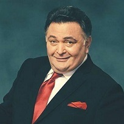
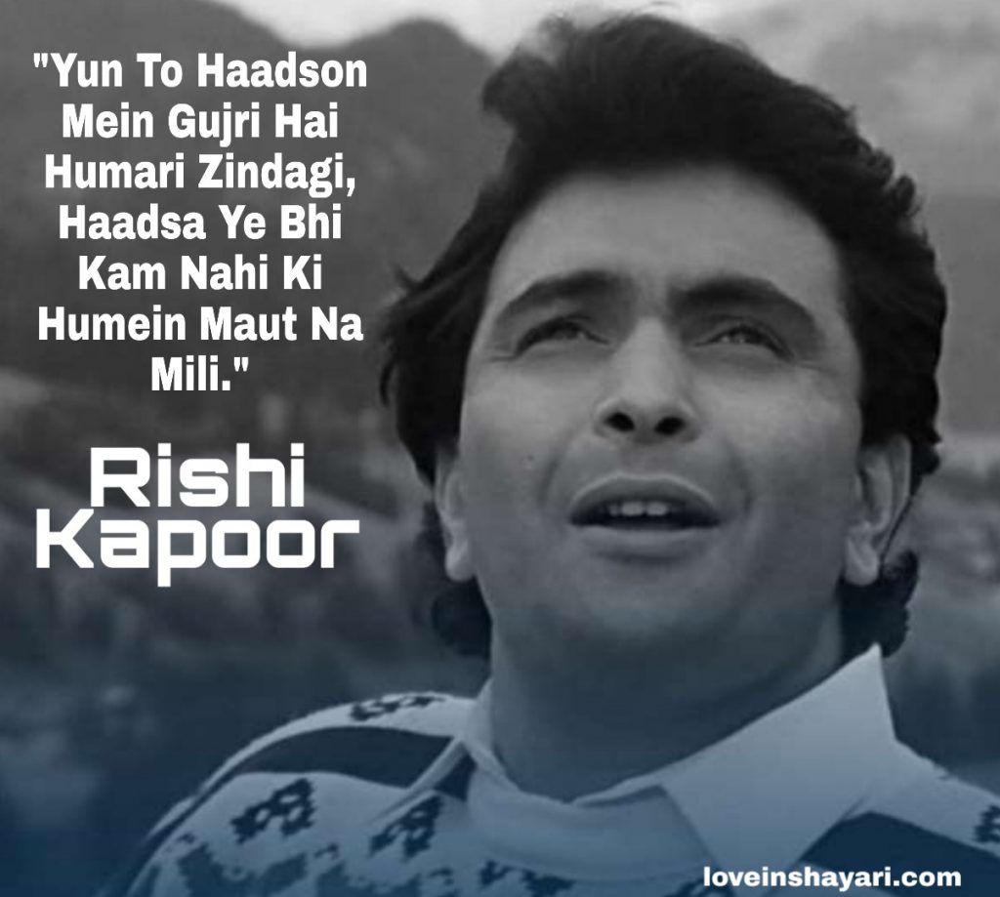
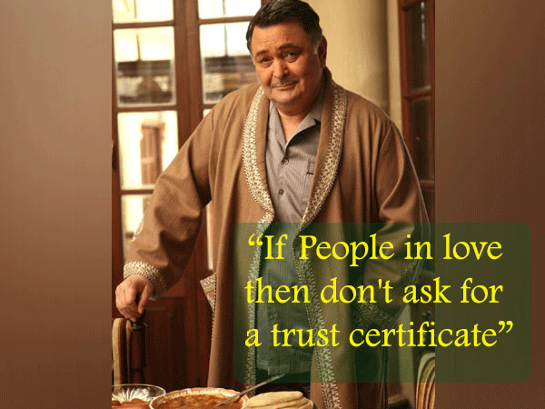
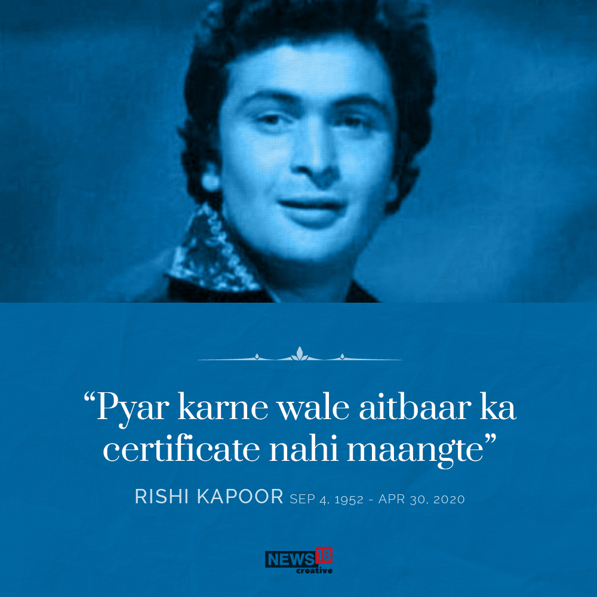

RISHI RAJ KAPOOR (CHINTOO)
Rishi Raj Kapoor (4 September 1952 – 30 April 2020) was an Indian actor known for his work in Hindi films. Born into the Kapoor family, he made his debut, as an adolescent, in his father Raj Kapoor's film Mera Naam Joker (1970) for which he won the National Film Award for Best Child Artist. As an adult, his first lead role was opposite Dimple Kapadia in the teen romance Bobby (1973), which won him the Filmfare Award for Best Actor. Kapoor is considered to be one of the most successful actors in the history of Bollywood.



Between 1973 and 2000, Kapoor starred as the romantic lead in 92 films. Some of his notable films during this period include Khel Khel Mein (1975), Kabhi Kabhie (1976), Sargam (1979), Karz (1980), and Chandni (1989). Since the 2000s, he played character roles to critical acclaim in such films as Do Dooni Chaar (2010), Aurangzeb (2013), and Mulk (2018). For his performance in Do Dooni Chaar (2010), he won the Filmfare Critics Award for Best Actor, and for his role in Kapoor & Sons (2016), he won the Filmfare Award for Best Supporting Actor. He was honoured with the flimfare Lifetime Achievement Award. His final film appearance was in The Body (2019).
Kapoor often collaborated with his wife, actress Neetu Singh, with whom he had two children, including Ranbir Kapoor. He died of leukaemia on 30 April 2020, aged 67.
Awards
1970 – National Film Award for Mera Naam Joker,and Bengal Film Journalists' Association Awards: Special Award
1974 – Filmfare Award for Best Actor for Bobby
2008 – Filmfare Lifetime Achievement Award
2009 – Honoured by Russian Government for contribution to cinema
2010 – Apsara Film & Television Producers Guild Awards: Best Actor in a Supporting Role for Love Aaj Kal
2011 – Zee Cine Awards: Best Lifetime Jodi along with Neetu Singh
2011 – Filmfare Critics Award for Best Actor for Do Dooni Chaar
2013 – The Times of India Film Awards (TOIFA), Best Actor in a Negative Role for Agneepath
2017 – Filmfare Award for Best Supporting Actor for Kapoor & Sons
2017 – Zee Cine Award for Best Actor in a Supporting Role – Male for Kapoor & Sons
2017 – Zee Cine Award for Best Actor in a Comic Role for Kapoor & Sons
Illness and death
Rishi was diagnosed with leukemia in 2018 and went to New York City for treatment. After successful treatment for a year, he returned to India on 26 September 2019.
However, he was admitted to Sir H. N. Reliance Foundation Hospital on 29 April 2020 owing to breathing difficulties. He died on 30 April 2020 from leukemia. His death came less than 24 hours after Irrfan Khan, another well-regarded actor and his co-star from D-Day died due to colon infection.
Rishi's last rites were performed at Chandanwadi Crematorium and his ashes were immersed in Banganga.



I firmly believe in destiny, so let's see what my luck has in store for me.